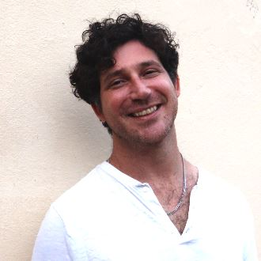
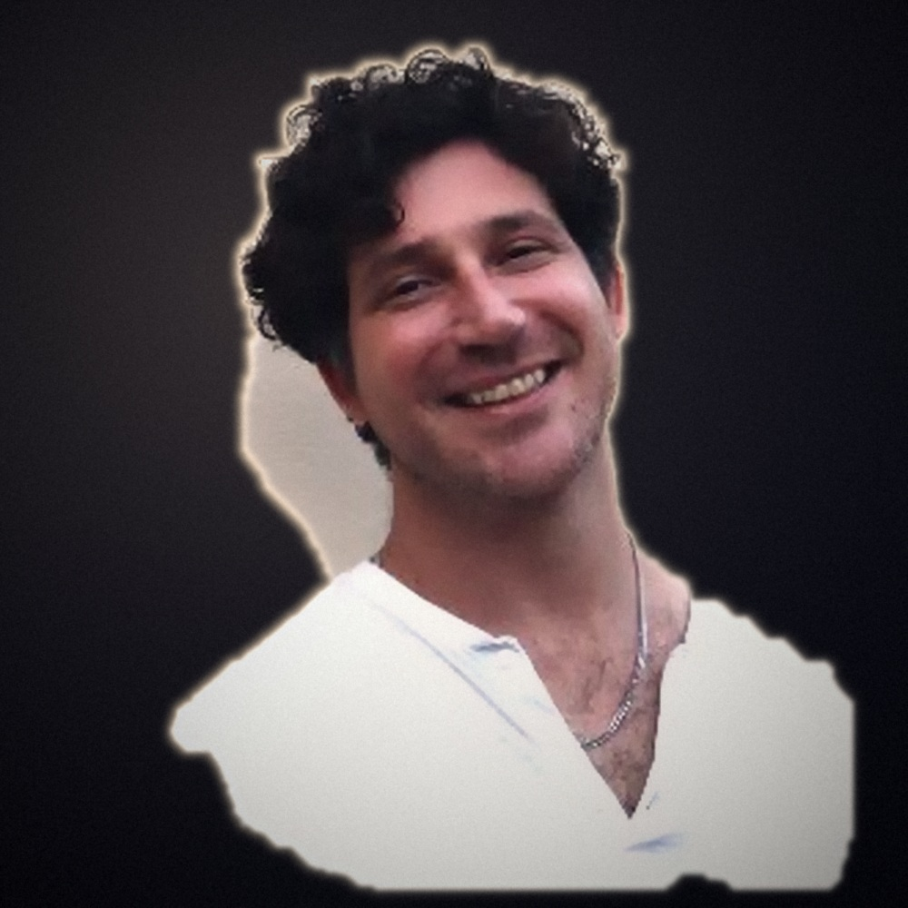
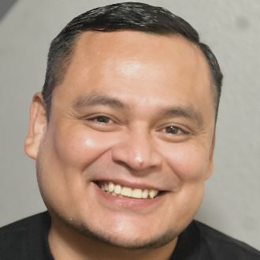
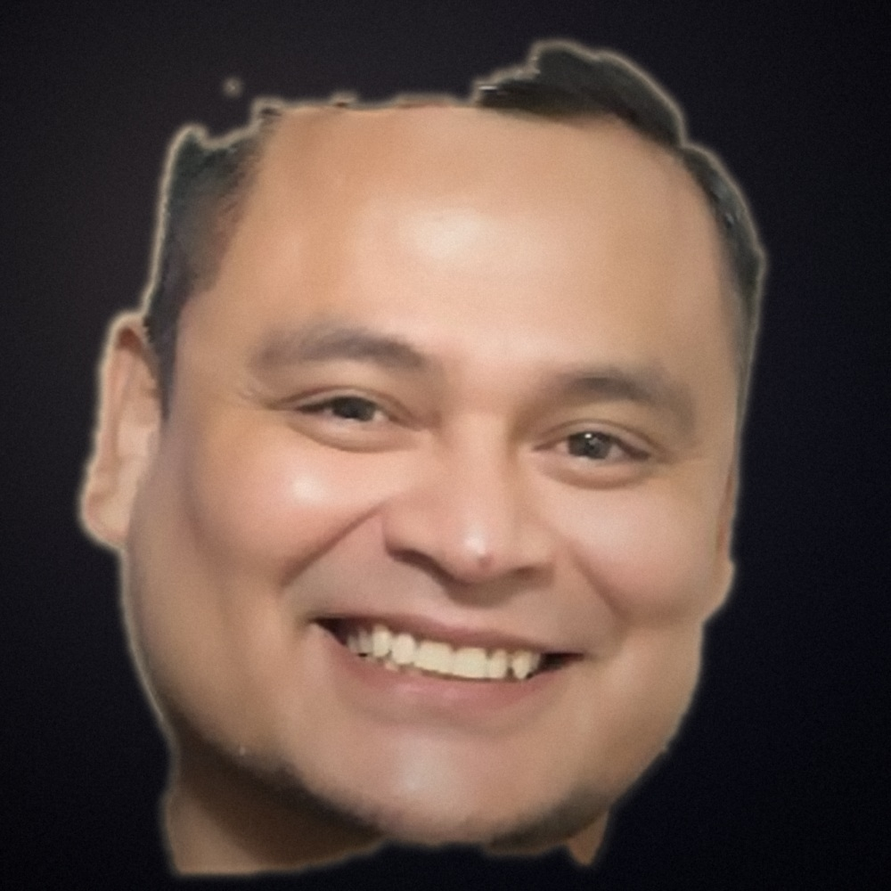
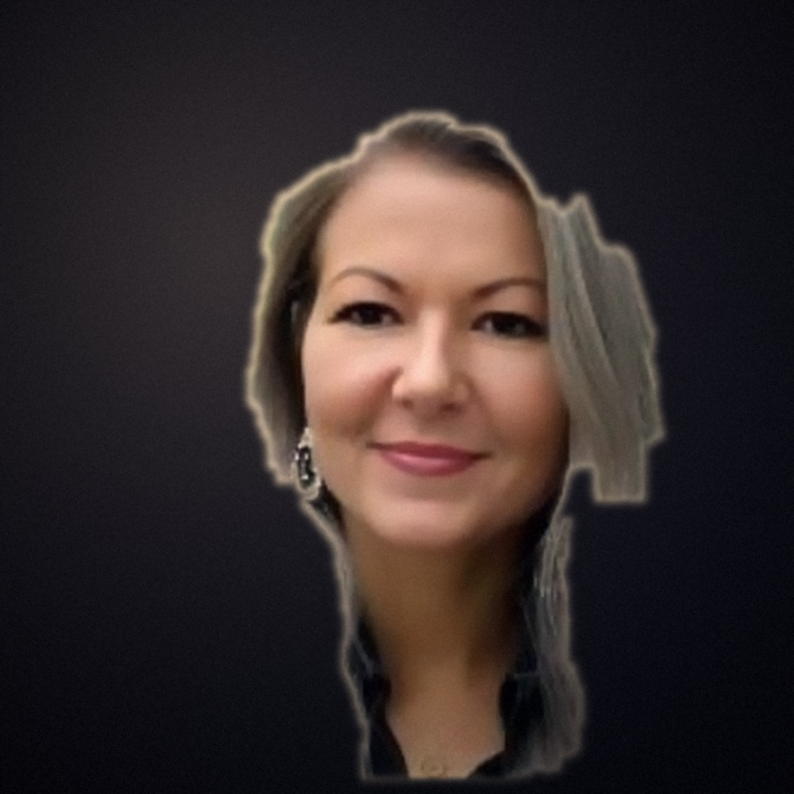
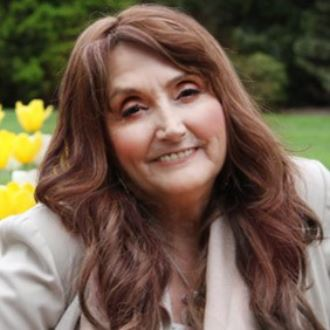
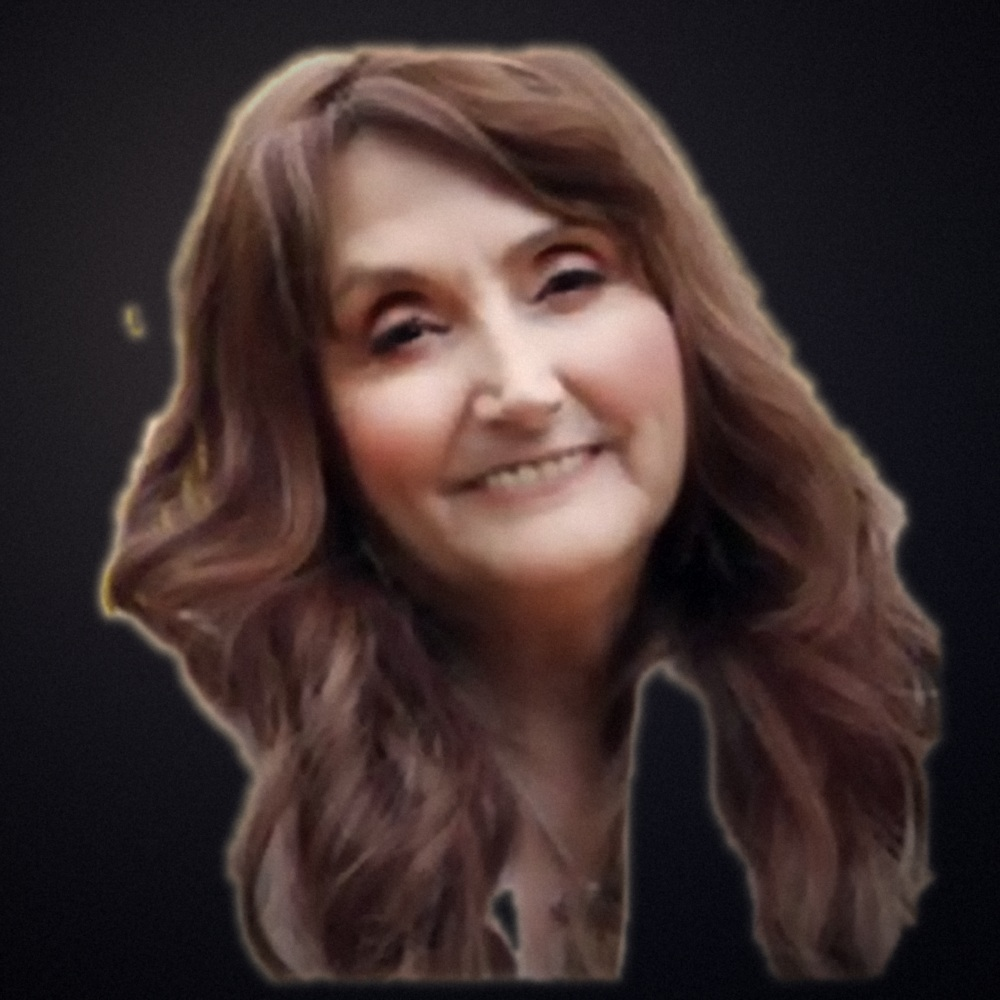
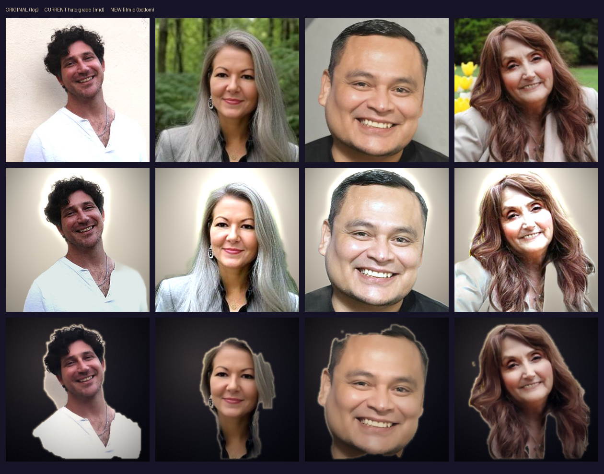

A new direction for the advisor headshots: a moody, film-lit studio grade with directional light, cinematic color, and fine grain — replacing the flat "halo glow." Every real face is preserved; this is grading, not generation.








Honest note: the source photos are only 330×330 web thumbnails, so no treatment can add real detail. This grade fixes the tacky glow and the muddy tone, but the edge cutout is soft (done with a fallback matte). True Annie-Leibovitz-grade results — sharp skin, real studio relighting, clean edges — need either the advisors' original high-res photos or a face-preserving generative model (CodeFormer / GFPGAN / InstantID) run via a GPU or an image API.